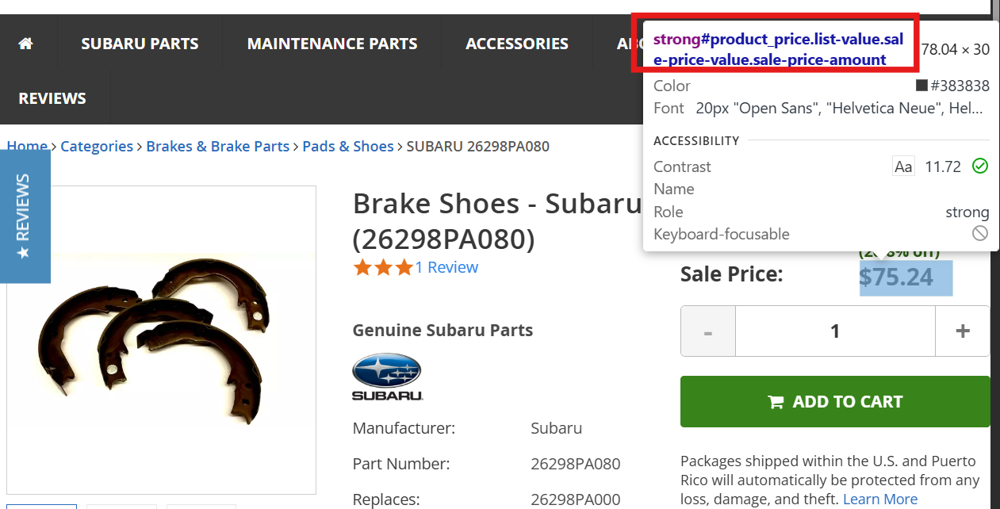
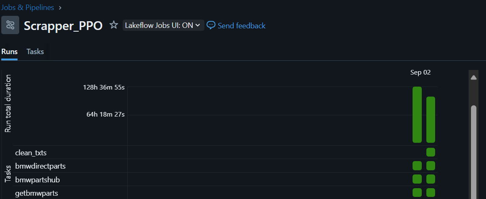
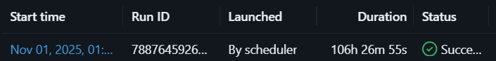

flowchart LR
subgraph "🌍 The Web"
A[("🛒 Website A")]
B[("🛒 Website B")]
C[("🛒 Website C")]
end
subgraph "🤖 Web Scraper"
D["Visits pages\nautomatically"]
end
subgraph "📊 Output"
E[("Organized\nData")]
end
A --> D
B --> D
C --> D
D --> E
style D fill:#9b59b6,color:#fff
style E fill:#27ae60,color:#fff
🤖 Web Scraping of Competitor Data with Generative AI


🚀 The Ultimate AI-Powered Competitive Intelligence Platform 🚀
Performance Metrics
| 🎯 Metric | 📈 Value | 💡 Impact |
|---|---|---|
| Automation Rate | 95% |
Save 15+ hours/week |
| Web sites | 5 (11 planned, more on the way) |
Subaru and BMW for 3 countries |
| Cost | 0$ |
No paid APIs, no proxies |
| Compliance | 100% |
Ethical & legal |
Problem Statement

| Aspect | Reality |
|---|---|
| Speed | Hours per website |
| Scale | Limited by human capacity |
| Cost | High (staff time) |
| Accuracy | Prone to errors |
| Sustainability | Not feasible long-term |

| Aspect | Reality |
|---|---|
| Speed | Fast, but fragile |
| Scale | Breaks when sites change |
| Cost | Developer maintenance |
| Accuracy | Good until it breaks |
| Sustainability | Constant fixes needed |

| Aspect | Reality |
|---|---|
| Speed | ⚡ Fast & adaptive |
| Scale | ✅ Handles changes automatically |
| Cost | 💰 Free (local LLMs) |
| Accuracy | 🎯 Self-correcting |
| Sustainability | 🔄 Minimal maintenance |
Important💰 Why Competitor Data Matters
In parts pricing, knowing what competitors charge is the difference between winning and losing customers. Without this data, pricing decisions are guesswork.
🏗️ Complex Structures
Websites are built differently — no two are alike
🔄 Constant Changes
Layouts update frequently, breaking traditional scrapers
🛡️ Anti-Bot Measures
Sites actively block automated data collection
Our team needed competitor prices at scale. Instead of expensive APIs or manual research, we built something simpler, faster, and free using modern AI tools.
Cambios
- No mencionar todas las páginas sino solo los mercados aprobados (Subaru y BMW de época de Tiger): listo al inicio, falta al final en la evidencia.
- Explicación sencilla de web scraping: definición - (pasante esclavo sacando info, mentiras xd (manual) - librerías como requests o beautiful soup (insostenibilidad) - herramientas modernas LLMs): LISTO
- Enfatizar en las dificultades de scrapear - sostenibilidad y escalabilidad: LISTO
- Mencionar proxy para reducir tiempos de ejecución - explicación sencilla como el ejemplo de los disfraces. Además posible reducción de costos al bajar la utilización del cluster.
- Simplificar parte de Solution Implementation y todo en general
- Performance metrics al inicio con más métricas.
- Agregar más grafiquitos.
Table of Contents
- 🤖 Web Scraping of Competitor Data with Generative AI
- Cambios
1. The Tools
AI-ready web scraping library
- Extracts data using traditional methods + LLMs
- Handles complex website structures
- GitHub Repository
Run LLMs locally — no API costs
- Free access to powerful AI models
- Runs on our Databricks cluster
- Browse Models
Both of these tools are supported by a large community and are safe to use.
2. Features
| Feature | Description | Status |
|---|---|---|
| 🕷️ Smart scraping | Transform manual research into automated tasks | ✅ Ready |
| 🔧 Scalability | Robust to website changes | ✅ Ready |
| ⚡ Performance | Handle multiple competitors simultaneously | ✅ Ready |
| 🛡️ Compliance | Built-in ethical guidelines and rate limiting | ✅ Ready |
| 📊 PPO tool | Include competitors information in simulator tool | ✅ Ready |
| 💡 Coding assistant | Local coding assistant for fast iteration | ✅ Ready |
| 📅 Monthly monitoring | Extract competitor prices to build a historical database | 🔄 In progress |
| 🚀 Scalability-jsjsjsjs | Solution applicable to any team in Inchcape | 📋 Planned |
| 🤖 AI analysis | Track competitors price behaviours with AI | 📋 Planned |
3. The Plan
First, we study suitable websites to ensure that they are relevant (i.e. not accessories or vehicles) and allow data extraction. We then follow this structure to extract competitors’ data on parts pricing.
flowchart LR
J[Databricks job]
K[Azure Delta Lake]
J --> A
I[OEM part numbers]
A[Competitor websites] --> B[Non-suitable websites]
A --> C[Suitable websites]
F[CSS extraction]
G[AI extraction]
C --> F
C --> G
F --> M
G --> M
H[Competitors data table]
M[Intelligent scrapper class]
K --> L[ERP classification]
L --> I
I ---> M
M --> H
N[PPO simulator tool]
H --> N
4. Solution Implementation
This section briefly outlines all the steps involved in building the AI-powered web scraper and provides evidence of its functionality within the Databricks ecosystem.
4.1 Setup
# install Ollama
curl -fsSL https://ollama.com/install.sh | sh
# install crawl4ai and its dependencies
pip install -U crawl4ai
python -m playwright install --with-deps chromium
# our chosen large language model
ollama pull qwen2.5:3b4.2 Databricks Workspace
The project is already working in the databricks ecosystem, loading and writing tables once a month.

4.2.1 oem_codes
Different brands and countries use different ERPs (SAP, Autoline and Derco, for example). This folder contains specific routines that extract all OEM part numbers and consolidate them in a table with a consistent format.
4.2.2 scraper_calls
It contains the scraping class and the functions used to automate the loading, extraction, post-processing and writing of all web pages.
4.2.3 markets
It contains notebooks for all the web pages that have already been scraped. It also contains a notebook for testing every new web page quickly.
4.2.4 mystery shopper and third party scrapper
It does not matter if a market did a mystery shopper of their own, or if they get their competitor data through a third party. We included this cases to mantain the same format as our competitor table.
4.3 AI scrapper logic
Traditionally, a scraper requires you to inspect the HTML of a webpage and find the tags for every element you want to extract. For example, if we wanted the price of a single product, the HTML tag would look like this:

Once we have identified the elements, we use an extraction strategy via CSS or XPath. This process must be repeated for every element on every web page! We currently extract the following elements:
- part name
- MSRP or list price
- sale price
- We also need something called the ‘BaseSelector’, which is the part of the website that contains the information we are looking for.
This equates to four elements per website. Since we currently scrape 11 of them, a total of 44 elements require manual searching (plus the discarded ones).
However, with this new solution, we address the problem we had with two options:
- Use the LLM directly to read the HTML and scrape the data. Use the LLM to detect the HTML tags, and then use the other extraction strategies.
We opted for a hybrid approach, using both the LLM and traditional CSS extraction. This gives us the best of both worlds: robustness to website changes, scalability, and speed.
4.4 AI scrapper class
The class is quite long, but the important thing is that we designed our table with all these columns in mind from the outset:
class CompetitorCrawler:
def __init__(self, df, competitor, currency, source, country, brand,
base_selector, oem_name, sale_price, list_price, custom_url = None):
.
.
.We have two prompts; one for difficult websites:
instruction="""
From the crawled content, extract the following details:
1. Title of the product
2. MSRP of the product
3. Sale price of the product
In structured JSON format
{
"title": "Product title",
"mrsp": "Product msrp",
"price": "Product price"
}
"""And another one for regular websites:
instruction="""
From the crawled content extract the html tags of:
1. Title of the product
2. MSRP of the product
3. Sale price of the product
4. BaseSelector where the previous three are located
In structured JSON format
{
"title_tag": "title html tag",
"mrsp_tag": "msrp html tag",
"price_tag": "price html tag",
"base_selector_tag": " base selector tag"
}
"""5. Final table
This unique table contains information on every brand and country. You can view it here:
development.parts_pricing_feature_store_americas_dev.competitors_ppo_global_v2| MANU_MATNR | oem_name | product_hierarchy | list_price | sale_price | url | scraped_date | competitor_name | currency | country | brand | source |
|---|---|---|---|---|---|---|---|---|---|---|---|
| 806750050 | Automatic Transmission Oil Pump Seal | 100005692 | 9.87 | 7.81 | https://www.subaruparts.com/oem-parts/subaru-automatic-transmission-oil-pump-seal-806750050?c=bD0xJm49U2VhcmNoIFJlc3VsdHM%3D | 2025-11-01 | subaruparts.com | USD | CHILE | SUBARU | scraper |
6. Databricks Job
This scraping process runs automatically once a month via a scheduled job. The 11 current webpages are as follows:

The latest run took 106 hours — just over four days. Not bad, considering we made requests at prudent intervals and did not use a proxy for almost 100,000 parts in total. We’ve been making steady improvements each week.

We have a scraping priority: we use the parts segmentation table to first scrape the parts with AA priority, then AB, then BA, and so on.
If an error occurs during execution, the scrapper is provided with a checkpoint capability. In that case, all progress is saved, and the ability to resume makes it easy to continue from the last OEM part scraped.
7. Our own scraping AI Assistant
The complexity of the code for this scraper increases with the number of web pages included and with each small feature. Even if the code offers an elegant solution, it will be overwhelming for a new data scientist.
For this reason, we have created our own assistant using the free tier of Google Gemini. This assistant considers all the code, not only from Databricks, but also from the official GitHub repository of the Crawl4AI library. With this personalised tool, we can iterate quickly and make modifications with minimal hallucinations. Both ChatGPT and the Databricks assistant struggle with this code.
The prompt used is as follows:
from llama_index.core.prompts import PromptTemplate
qa_prompt_tmpl_str = (
"Context information is below.\n"
"---------------------\n"
"{context_str}\n"
"---------------------\n"
"Given the context above, answer the query in a step-by-step manner. "
"Include code snippets when relevant. If you don't know the answer, say 'I don't know!'.\n"
"Query: {query_str}\n"
"Answer: "
)
qa_prompt_tmpl = PromptTemplate(qa_prompt_tmpl_str)This is what the assistant can do:
response = query_engine.query('Provide a working example of multiple url crawling with magic mode')
display(Markdown(str(response)))2025-10-20 20:33:11.323 | INFO | py4j.clientserver:wait_for_commands:600 | Received command c on object id p0
To crawl multiple URLs with Magic Mode, you can iterate through a list of URLs and call the arun method for each one within the AsyncWebCrawler context.
Here's a step-by-step example:
1. Import necessary libraries: You'll need AsyncWebCrawler from crawl4ai and asyncio to run the asynchronous code.
import asyncio
from crawl4ai import AsyncWebCrawler
2. Define a list of URLs: Create a list containing the URLs you want to crawl.
urls_to_crawl = [
"https://www.reuters.com/markets/us/global-markets-view-usa-pix-2024-08-29/",
"https://crawl4ai.com",
"https://janineintheworld.com/places-to-visit-in-central-mexico"
]
3. Create an asynchronous function: This function will contain the crawling logic.
...Now, with GitHub Copilot integrated into our local environments, we can provide it with the same context and receive an even better assistant that can modify code on the fly!
8. Next Steps
- Use the AI models to study the patterns and behaviours of multiple competitors.
- Use this tool for other scraping needs across Inchcape.
*This document was created with the help of GitHub Copilot.